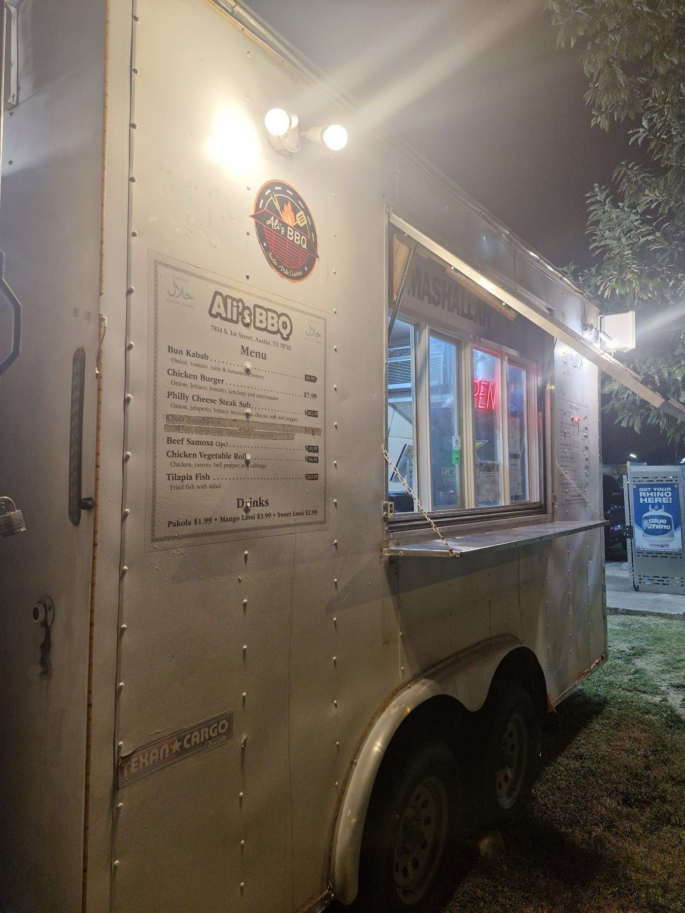

Kitchen notes
Ali's BBQ
Halal Indo Pak BBQ in South Austin.
Meet the crew
Mr. Ali and the trailer
A halal Indo Pak trailer with the name in big black letters and a neon OPEN sign in the window.
Friendly, welcoming owner. Grilled and street style food, from kebab rolls to a Philly cheese steak sub. Catering available: ask Ali.
- TexasHalalThe menu board carries the zabihah halal food mark.
- TexasCooked to orderEvery item is freshly made.
- TexasA friendly ownerMr. Ali welcomes everyone.

Find the truck
Find the trailer
7814 S 1st St, Austin, TX 78745
Look for the black lettering and neon OPEN sign. Open Wednesday to Sunday evenings.
Serving hours
- Mon
- Closed
- Tue
- Closed
- Wed
- 6–10 PM
- Thu
- 6–10 PM
- Fri
- 6–10 PM
- Sat
- 6–10 PM
- Sun
- 6–10 PM
Hungry yet?
Come by the trailer on South 1st, Wednesday to Sunday evenings.